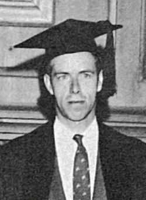
Alan Watts
Photographer / source credit: The University of Vermont Alumni Magazine vol. 39 no. 01, p. 22..
Source designation: Public domain.
Small reference portraits identify the speakers in the educational recording library. They do not imply endorsement or authenticate any recording. Images were obtained from Wikipedia / Wikimedia on September 27, 2026 and are served locally.
Images retain their original rights. Twelve source files are designated public domain or Creative Commons. The Mitch Hedberg and Notorious B.I.G. images are copyrighted images designated non-free/fair use on Wikipedia, not openly licensed photographs. Their source designation is not a general permission to reuse them. These low-resolution portraits are included only for identifying the subjects of the educational comparisons.
Files are unchanged thumbnails; the interface displays them in a square frame using CSS. Photographer, source and license links are listed below.

Photographer / source credit: The University of Vermont Alumni Magazine vol. 39 no. 01, p. 22..
Source designation: Public domain.
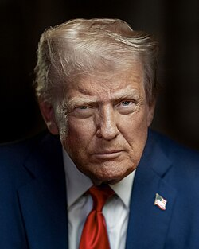
Photographer / source credit: Daniel Torok.
Source designation: Public domain.
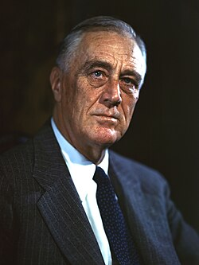
Photographer / source credit: Leon Perskie.
Source designation: CC BY 2.0.
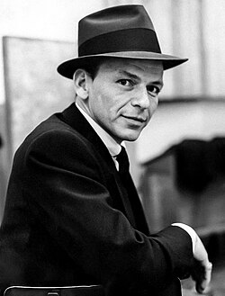
Photographer / source credit: Photograph by Capitol Records, per a credit found in the 1959 edition of the International Celebrity Register at page 696. No known source credits an individual photographer..
Source designation: Public domain.
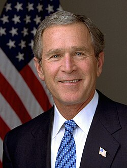
Photographer / source credit: Eric Draper.
Source designation: Public domain.
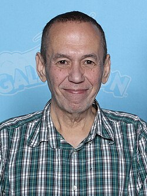
Photographer / source credit: Super Festivals from Ft. Lauderdale, USA.
Source designation: CC BY 2.0.
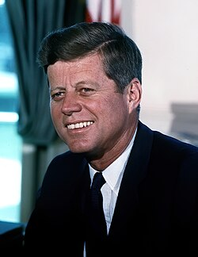
Photographer / source credit: Cecil W. Stoughton.
Source designation: Public domain.
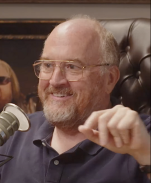
Photographer / source credit: YMH Studios.
Source designation: CC BY 3.0.
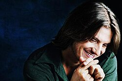
Photographer / source credit: Susan Maljan.
Source designation: Fair use.
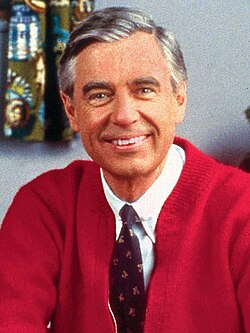
Photographer / source credit: Family Communications, Inc..
Source designation: Public domain.
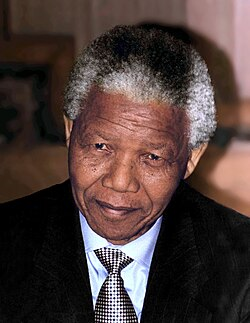
Photographer / source credit: Kingkongphoto & www.celebrity-photos.com from Laurel.
Source designation: CC BY-SA 2.0.
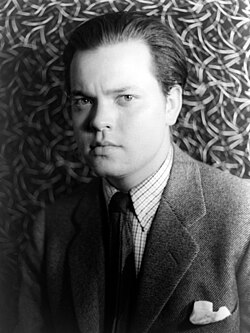
Photographer / source credit: Carl Van Vechten.
Source designation: Public domain.
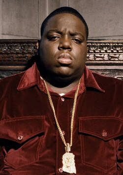
Photographer / source credit: Lori Shepler / Los Angeles Times (presumed).
Source designation: Fair use.
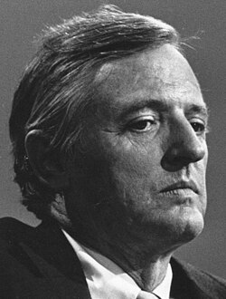
Photographer / source credit: Unknown photographer.
Source designation: Public domain.
.jpg){kind=link}
.jpg){kind=link}
.jpg){kind=link}
.jpg){kind=link}

.jpg){kind=link}


_(cropped).jpg){kind=link}


.jpg){kind=link}